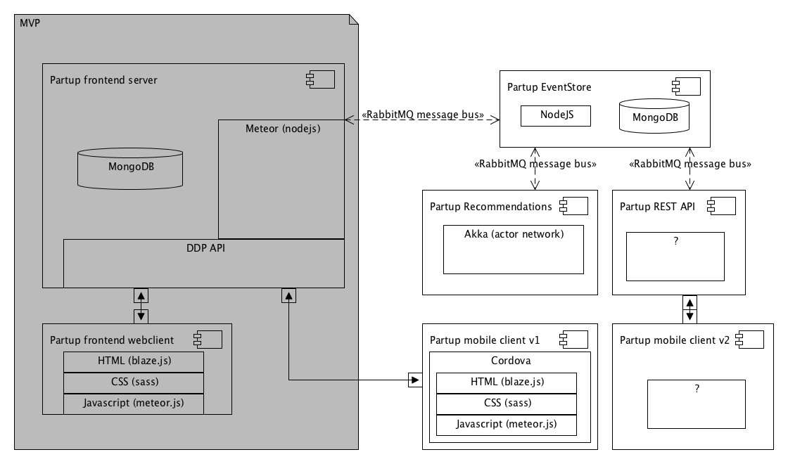

"a smart marketplace for teamwork, matching people into temporary teams"
Premises
- Super quick launch (4 months)
- Realtime collaboration emphasis
- Easy onboarding for developers
Choosing Meteor
the good
- Reactive data model
- "All inclusive" development environment
- Loads of (modern) packages
Choosing Meteor
the scary
- Framework maturity
- Risk tolerance
- DDP
Tutorial says:
"put everything in one file!"
Project structure
.. (up a dir)
/Users/peter/development/partup/
▾ app/
▸ client/
▸ i18n/
▸ lib/
▾ packages/
▸ cfs:file/
▸ partup:client-activity/
▸ partup:client-base/
▸ partup:client-columns-layout/
▸ partup:client-commentfield/
▸ partup:client-contribution/
▸ partup:client-copy-to-clipboard/
▸ partup:client-dropdowns/
▸ partup:client-focuspoint/
▸ partup:client-forgotpassword/
▸ partup:client-gallery/
▸ partup:client-invite-to-partup/
▸ partup:client-loader/
▸ partup:client-location-autocomplete/
▸ partup:client-login/
▸ partup:client-network-settings/
▸ partup:client-pages/
▸ partup:client-partup-tile/
▸ partup:client-partupsettings/
▸ partup:client-popup/
▸ partup:client-rating/
▸ partup:client-ratings/
▸ partup:client-resetpassword/
▸ partup:client-spinner/
▸ partup:client-update/
▸ partup:client-usercard/
▸ partup:client-widget-spinner/
▸ partup:lib/
▸ partup:meteor-bender/
▸ partup:newrelic/
▸ partup:server-base/
▸ partup:server/
▸ private/
▸ public/
▸ server/
▸ tests/
▸ uploads/
package.json
scss.json
▸ backups/
▸ bin/
▸ config/
▸ devops/
▸ docs/
CHANGELOG.md
ERROR.md
methods_documentation*
README.md
Component directory structure
▾ partup:client-activity/
▾ i18n/
en.i18n.json
nl.i18n.json
▾ templates/
ActivityForm.html
ActivityForm.js
ActivityFormPlaceholders.js
ActivityView.html
ActivityView.js
Activity.html
Activity.js
package-tap.i18n
package.js
Activity.html
{{# if showForm }}
{{> ActivityForm
activity=activity
edit=edit
CREATE=CREATE
POPUP=POPUP
CREATE_PARTUP=CREATE_PARTUP
createCallback=createCallback
}}
{{ else }}
{{> ActivityView
activity=activity
contribution_id=contribution_id
edit=edit
COMMENTS_LINK=COMMENTS_LINK
CONTRIBUTIONS=CONTRIBUTIONS
EXPANDED=EXPANDED
READONLY=READONLY
CREATE_PARTUP=CREATE_PARTUP
UPDATE_LINK=UPDATE_LINK
isUpper=isUpper
}}
{{/ if }}
Activity.js
/**
* Widget to render a single activity
*
* You can pass the widget a few options which enable various functionalities
*
* @param {Object} activity The activity to render
* @param {Function} createCallback A function which is executed after a new activity has been added
* @param {String} contribution_id Contribution id to render, if only one should be rendered
* @param {Boolean} COMMENTS_LINK Whether the widget should display the link to comments
* ...
*/
// snip
/*************************************************************/
/* Widget helpers */
/*************************************************************/
Template.Activity.helpers({
showForm: function() {
return !this.READONLY && (!!this.CREATE || Template.instance().edit.get());
}
});
// snip
component usage
{{# each activities }}
{{> Activity activity=. CONTRIBUTIONS=true COMMENTS_LINK=true }}
{{/ each }}
{{# each archivedActivities }}
{{> Activity activity=. CONTRIBUTIONS=true }}
{{/ each }}
Lib package
▾ partup:lib/
▸ collections/
▸ helpers/
▸ private/
▸ schemas/
▸ services/
▸ startup/
▸ transformers/
error.js
namespace.js
package.js
namespace.js
/**
@namespace Partup
@name partup
*/
Partup = {};
/**
@namespace Helpers
@name partup.helpers
*/
Partup.helpers = {};
/**
@namespace Schemas
@name partup.schemas
*/
Partup.schemas = {
/**
@namespace schema.forms namespace
@name partup.schemas.forms
*/
forms: {},
/**
@namespace schema.entities namespace
@name partup.schemas.entities
*/
entities: {}
};
// snip
tags.js
/**
@namespace Tags helper service
@name Partup.services.tags
@memberOf partup.services
*/
Partup.services.tags = {
/**
* Transform a comma separated string into an array of tags
*
* @memberOf services.tags
* @param {String} tags_input
*/
tagInputToArray: function(tags_input) {
if (!tags_input) return [];
var _tags = tags_input.split(',');
if (_tags.length === 0) return [];
return _tags.map(function(elem) {
return elem.trim();
}).filter(function(elem) {
return !!elem;
});
},
// snip
}
model helpers
/**
* Network model
*/
var Network = function(document) {
_.extend(this, document);
};
/**
* Leave network
*
* @return {Boolean}
*/
Network.prototype.leave = function(upperId) {
Networks.update(this._id, {$pull: {uppers: upperId}});
Meteor.users.update(upperId, {$pull: {networks: this._id}});
};
/**
@namespace Networks
@name Networks
*/
Networks = new Mongo.Collection('networks', {
transform: function(document) {
return new Network(document);
}
});
/**
* Networks collection helpers
*/
Networks.findByFilter = function(options) {
var options = {
// snip
};
var complicatedQuery = {
// snip
};
return this.find(complicatedQuery, options);
};
Challenge 3
Microservice integration
"How do we decouple meteor app logic into separate microservices?"
Event based meteor methods

activities_methods.js
Meteor.methods({
/**
* Archive an Activity
*
* @param {string} activityId
*/
'activities.archive': function(activityId) {
var upper = Meteor.user();
var activity = Activities.findOneOrFail(activityId);
if (!upper || activity.creator_id !== upper._id) {
throw new Meteor.Error(401, 'Unauthorized.');
}
try {
Activities.update(activityId, {$set: {archived: true}});
Event.emit('partups.activities.archived', upper._id, activity);
return {
_id: activity._id
};
} catch (error) {
Log.error(error);
throw new Meteor.Error(500, 'Activity [' + activityId + '] could not be archived.');
}
}
});
activities_handler.js
/**
* Generate a Partup update when an activity is archived
*/
Event.on('partups.activities.archived', function(userId, activity) {
if (!userId) return;
if (!activity.update_id) return;
var set = {
upper_id: userId,
type: 'partups_activities_archived',
updated_at: new Date()
};
Updates.update({_id: activity.update_id}, {$set: set});
});
example
- User joins a partup in meteor app
- Event is sent from Meteor app to bus
- Recommendation service reacts on event
- Recommendation service generates recommendations and sends event
- Meteor reacts on recommendation event and pushes data to client
Challenge 4
Scaling Meteor
Next steps
- Testing (velocity)
- DDP debug tooling
Thank you for your attention